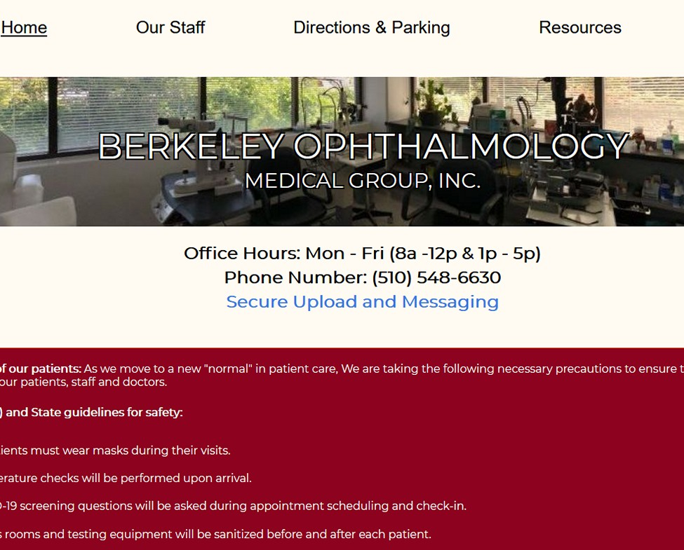

Deployed Project is Linked Below
Berkeley Ophthalmology Medical Group
A local Ophthalmology company needed a redesign of their webpage. Some users had difficulty reading the page because the fonts were too small. Also, the webpage was not designed to by viewed on mobile devises. The orginal webpage can be found here. Unfortunately, the company has gone out of business but I have posted the redesign approved by the companies tech supervisor. This project demonstrates:
- Redesigned website appearance
- Reorganized HTML and CSS
- Made fonts responsive for users with poor vision
- Made design responsive for users using tablets or mobile devices
- Added some javascript to make the webpage more user friendly